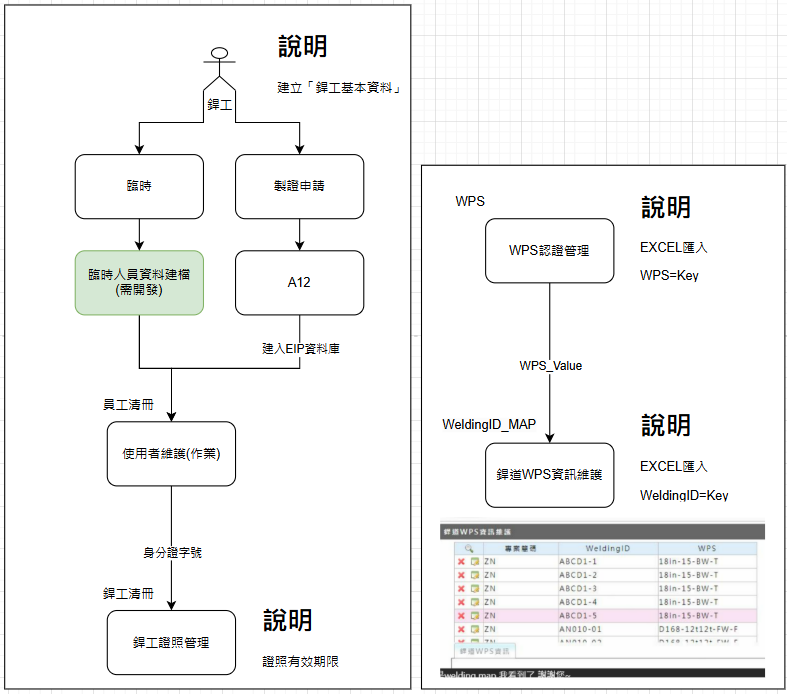
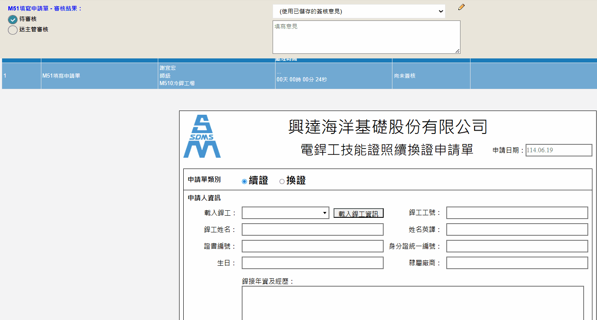
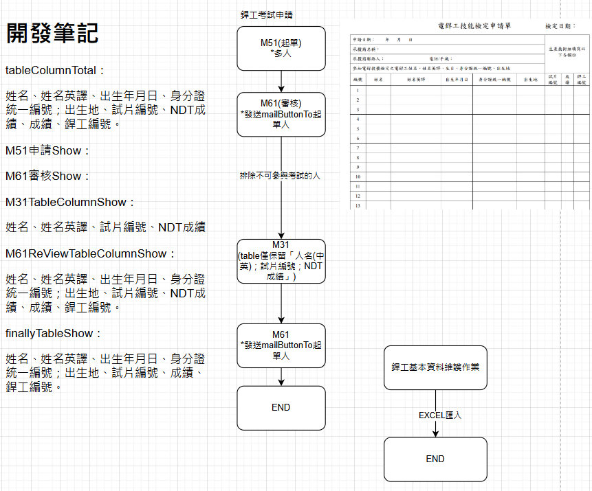
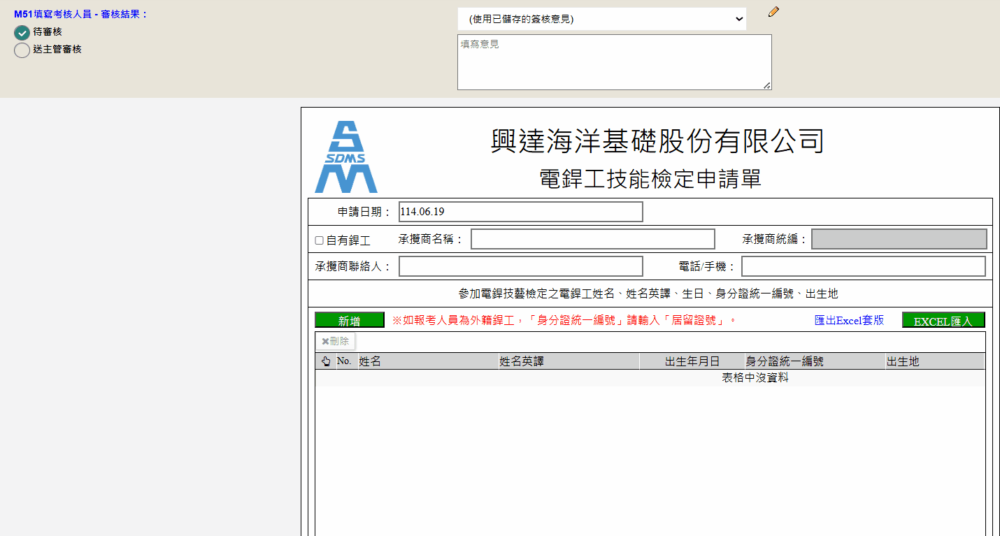

銲工基本資料建立
1. 依照廠內的銲工類別，先建立銲工基本資料。
2. 可圖實紀錄包含，自有銲工、臨時銲工以及所具備的證照資訊。
3. 支援excel匯入功能。

銲工資格證照考試申請系統
1. 帶入銲工基本資料，自動填寫考照申請單。
2. 可選擇考試類別，依照不同類別自動計算證照期限以及下次考照日。
3. 通過簽核完成申請後，將自動產出考試申請單，並且自動發送至考試驗證單位。
4. 考試驗證單位可在同表單填寫考試結果，並夾帶附件。
5. 通過測試的人員，系統將自動更新銲工清冊的證照資訊，不需再人為更新。


資格證照續換證申請作業
1. 每天排程自動檢查即將過期銲工證照。
2. 到期前一個月，每周自動發送mail提醒。
3. 銲工證照到期單日，系統自動啟動該銲工的續換證申請單至主辦人員的代辦工作。
4. 主辦窗口填寫完成、通過簽核，系統自動將已完成申請的「續換證申請單」送至檢驗單位窗口。
5. 驗證單位可在同表單填寫續換證結果，並夾帶附件。
6. 通過測驗人員，系統將自動更新銲工清冊的證照資訊，不需再人為更新。